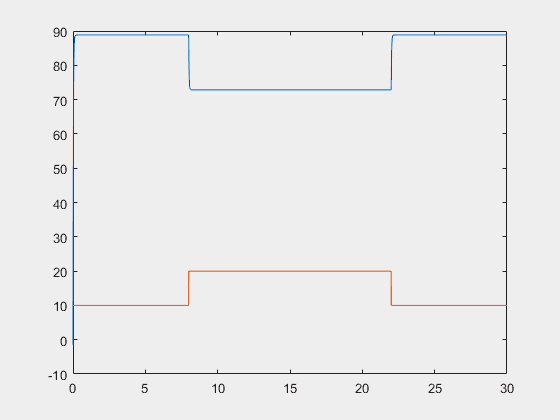
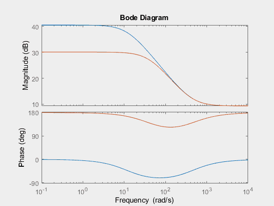

2ο Εργαστήριο
Table of Contents
- Προδιαγραφές.
- Συνάρτηση μεταφοράς κλειστού βρόχου
- Σφάλμα Θέσης
- Μελέτη με \(k=1.5\)
- Closed Loop TF για το \(T\)
- Ανάλυση των ΣΜΚΒ
- Στροφές κινητήρα
- Υπολογισμός DC Gains
- Σύγκριση με την μελέτη ανοιχτού βρόχου:
- Στροφές σε steady state
- Ανάλυση σε matlab
- Σύγκριση προδιαγραφών OL, CL
- Απόκριση στροφών σε κλιμακωτού τύπου φορτίο
- Bode HV
- Bode HT
Σύστημα κλειστού βρόχου ίδιου τύπου με την προηγούμενη φορά μόνο που έχει προστεθεί μοναδιαία αρνητική ανάδραση
\begin{equation} \label{eq:1} HT(s) = \frac{2.92(s+440)}{s+12.064} \end{equation} \begin{equation} \label{eq:2} HV(s) = \frac{18.69}{s+12.064} \end{equation}Προδιαγραφές.
Ώστε να προσδιορίσουμε κατάλληλα τον ελεγκτή k
- Μηδενική υπερύψψση για τις στροφές \(\omega(t),\Omega(s)\)
2 Σφάλμα μόνιμης κατάστασης θέσης μηδενικό για το ΣΚΒ:.
\begin{equation} \label{eq:3} e_{ss} = 0, \omega_{\delta,ss} = V \end{equation}- Χρόνος ανόδου \(t_a \leq 160ms\)
- Τάση διέγερσης \(v_a(t) \leq 350V\)
- \(V=150V\)
- \(\omega_{\delta,max} = 200rad/sec\)
Προδιαγραφή του \(v_a\)
Πρέπει ανεξαρτήτως εισόδου \(v_a \leq 350V\)
\begin{equation} \label{eq:4} v_a = (v-\omega)*k = e_{max}*k \Rightarrow \cdots k\leq 1.75 \end{equation}Συνάρτηση μεταφοράς κλειστού βρόχου
Από την αρχή της επαλληλίας, παίρνοντας $TL = 0$$
\begin{equation} \HV_k(s) = \frac{18.69k}{s + (12.064 + 18.69k)} \end{equation}Οπότε παρατηρούμε πως ο πόλος του closed loop μετακινείται προς τα αριστερα. Δεν μένει δηλαδή στο -12. Είναι καλό αυτό (γιατί?). Βέβαια δεν μπορεί να πάει πολύ πιο αριστερά λόγω των προδιαγραφών.
Σφάλμα Θέσης
Από την θεωρία γνωρίζουμε πως:
\begin{equation} \e_{ssp} = \frac{1}{1+k_p} = \frac{12.064}{12.064+128.69k} \neq 0 \end{equation}Επομένως, όσο αυξάνει το κέρδος μειώνεται το σφάλμα στην μόνιμη κατάσταση.
Μελέτη με \(k=1.5\)
Γιατί όμως πήραμε 1.5 και όχι 1.75?
k = 1.5; nHVK = [18.69*k]; dHVK = [1 12.064+18.69*k]; HVk = tf(nHVK,dHVK)
Closed Loop TF για το \(T\)
Οι πράξεις εδώ δεν έγιναν θεωρήθηκε δεδομένο
nHTK = -1*[2.92 2.92*440]; dHTK = [1 40.1]; HTk = tf(nHTK,dHTK)
Ανάλυση των ΣΜΚΒ
Ο πόλος μας πήγε στο -40, ενώ έχουμε ακόμα ένα μηδενικό…
Στροφές κινητήρα
Απολύτως αναμενόμενα βάση της θεωρίας:
\begin{equation} \Omega(s) = HV_k(s)V(s) + HT_k(s)T_L(s) \end{equation}Υπολογισμός DC Gains
Θυμίσου από θεωρία dcgain = Tf(0)
HVk0 = dcgain(HVk) HTk0 = dcgain(HTk) essp = 12.064/( 12.064+18.69*k )
Σύγκριση με την μελέτη ανοιχτού βρόχου:
Παρατηρούμε πως τα dcgain έχουν και στις0δύο περιπτώσεις μεωθεί, οδηγώντας σε μια μεγαλύτερη μείωση του σφάλματος με είσοδο μοναδιαία βηματική συνάρτηση.
Στροφές σε steady state
Από FVT:
\begin{equation} \omega_{\delta,ss} = \lim_{s\to0}s*\Omega(s) = \cdots \end{equation}Στην διαφάνεια 6 φανερώνεται η σύγκριση για ανοιχτό και κλειστό βρόχο.
Ανάλυση σε matlab
figure(3) step(150*HV) hold on step(150*HVk)

Σύγκριση προδιαγραφών OL, CL
- Rise time -> πτώση από τα 180+ στα 54, υπερκαλύπτοντας τις προδιαγραφες
- Settle Time -> από 324+ στα 97
Απόκριση στροφών σε κλιμακωτού τύπου φορτίο
Το γράφω μόνο για ορολογία Δειγματοληψία του χρόνου απο 0 εως 30 με 10ms sampling time
figure(4); t = 0 : 0.01 : 30; uV = 150 * stepfun(t,0); yV = lsim(HVk, uV, t); uT = 0.5 * stepfun(t,0) + 0.5 * stepfun(t, 8) + -0.5 * stepfun(t, 22); yT = lsim(HTk, uT, t); y = yV + yT; plot(t, y, t, 20*uT)

Bode HV
figure(5) bode(HV) hold on; bode(HVk)

Bode HT
figure(6) bode(HT) hold on; bode(HTk)
